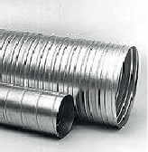
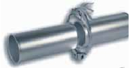

Am häufigsten werden Rohre und Kanäle aus Stahlblech (Baustahl grundiert oder verzinkt oder Edelstahl) eingesetzt. Vorzugswerkstoff ist dabei verzinktes Stahlblech, weil es sowohl korrosionsbeständig als auch preiswert zu fertigen ist.
 |
 |
|
| Abbildung 1: Wickelfalzrohre | Abbildung 2: Geschweißtes Rohr mit Spannring |
Wickelfalzrohr oder Spiralfalzrohr (Blechdicken 0,6 bis 1,2 mm, siehe DIN 24 151 und 24 152) wird aus verzinktem Bandmaterial gewendet und spiralförmig gefalzt. Die dazugehörigen Formteile und Verbinder lassen sich einfach in das Rohrinnere stecken. Die Abdichtung der Verbindungen erfolgt entweder durch Klebung oder besser mit auf den Formstücken aufgebrachten Doppellippen-Gummidichtungen. Auf Grund des geringen Fertigungs- und Montageaufwandes ist Wickelfalzrohr heute die meist verbreitete Bauart, der Einsatz ist aber auf nicht schleißende (abrassive) Stäube und bei größeren Durchmessern auf Drücke bis etwa ±2 000 Pa begrenzt.
Geschweißte Rohre (Blechdicken 1 bis 4 mm, siehe DIN 24 153) kommen bei höheren Anforderungen an Verschleißfestigkeit und Druckdichtigkeit zum Einsatz. Die Verbindung erfolgt dabei entweder sehr montage- und inspektionsfreundlich mit Bördelflanschen und Spannringen (siehe Abb. A2-2, druckdicht bis ca. ±3500 Pa) oder mit angeschweißten DIN-Flanschen und Verbindung über Schrauben, die eine druckdichte und gegebenenfalls explosionsdruckfeste Ausführung ermöglichen.
Kunststoffrohre haben ihren Hauptvorteil in der Korrosionsbeständigkeit und werden deshalb vorzugsweise bei säurehaltiger Luft oder kondensierenden Dämpfen eingesetzt. Die dafür am häufigsten verwendeten Thermoplaste PE und PP sollten in der schwerentflammbaren Ausführung (PEs oder PPs) eingesetzt werden. Die Gefahr elektrostatischer Aufladung ist zu beachten. Kanäle und Rohre werden als Halbfertigfabrikate von der Industrie angeboten und werden vor Ort durch Schweißung der Stöße unlösbar miteinander verbunden.
Flexible Rohre aus Aluminium werden ähnlich wie Wickelfalzrohre aus übereinander gelegten Bändern gefertigt, die durch Einprägen von Rippen miteinander verzahnt werden. Sie sind in der Länge stauch- und streckbar, lassen sich in engen Biegeradien verlegen und übertragen keine Schwingungen. Sie werden deshalb oft als Verbindungselement zwischen Geräten und festen Leitungen und bei engen Einbauverhältnissen eingesetzt. Die Rippen verursachen hohe Druckverluste. Sie machen die Rohre ungeeignet für staubhaltige, ölhaltige oder fetthaltige Luft.
Kunststoffschläuche werden meist aus PE-, PU- oder PP-Folie mit einer außenliegenden Federdrahtspirale hergestellt. Sie werden vor allem für den schwingungsisolierten Maschinenanschluss an feste Leitungen eingesetzt. Wegen des unebenen Strömungskanals mit erhöhtem Druckverlust und Ablagerungsgefahr sind sie so kurz wie möglich auszuführen. Auf schwerentflammbare und gegebenenfalls antistatische Ausführung ist zu achten.
Rechteckige Luftkanäle werden aus (in der Regel verzinktem) Stahlblech gefalzt und über spezielle Luftkanalprofile dicht miteinander verbunden. Sie sollten nur für Reinluft verwendet werden, um Ablagerungen in den Kanten und Ecken zu vermeiden. In Einzelfällen, z. B. für aggressive Luft, werden auch Kanäle aus geschweißten Kunststoffplatten oder aus Faserzementbaustoffen eingesetzt.
Die entscheidende Auslegungsgröße für einen wirtschaftlichen und störungsfreien Betrieb ist die Luftgeschwindigkeit. Die Dimensionierung der Leitungsquerschnitte stellt jedoch immer einen Kompromiss dar, denn niedrige Luftgeschwindigkeiten senken zwar den Druckverlust und den Schallpegel, erhöhen aber den Platzbedarf und die Gefahr von Ablagerungen.
| Leitungsquerschnitt | Platzbedarf | Druckverlust/Betriebskosten | Schallpegel | Ablagerungen |
| kleiner | geringer | höher | höher | geringer |
| größer | höher | geringer | geringer | höher |
In der Praxis haben sich folgende Luftgeschwindigkeitsbereiche bewährt:
| 4 bis 7 m/s: | Reinluft, Zu- und Abluft im Komfortbereich |
| 5 bis12 m/s: | Zuluft in Gewerbe/Industrie und Abluft mit leichten Verunreinigungen |
| 15 bis 18 m/s: | geringe Partikelbeladung (z. B. Schweißrauch), leichte Stäube |
| 18 bis 22 m/s: | hohe Partikelbeladung (Entstaubung) oder schwere Partikel (Späne) |
| > 22 m/s: | pneumatische Förderung |
Um in einem Rohrleitungsnetz in allen Strängen die gewünschten Geschwindigkeiten zu erreichen, ist der Einbau von Luftregulierklappen (Drosselklappen) meist unumgänglich.
Der Druckverlust (Rohrreibungsverlust) von Rohren und Formteilen steigt quadratisch mit der Luftgeschwindigkeit sowie proportional mit der Luftdichte und dem Widerstandsbeiwert, der für die verschiedenen Rohrbauteile durch Versuche bestimmt wird (Wertetabelle siehe Literatur).
Die Druckverluste von Formteilen können durch folgende Maßnahmen sehr wirksam reduziert werden:
Große Radien bei Rohrbögen (r ≈ 1,5…2d)
Winkel bei Abzweigen und Hosenrohren ≤ 30 °
Übergänge rund auf eckig und Konusstücke mit Winkeln ≤ 30 °
In Bezug auf den mit steigender Luftgeschwindigkeit zunehmenden Schallpegel sind die in DIN EN 13779 genannten zulässigen Werte in Räumen zu beachten.
Für die Auslegung komplexer Rohrleitungsnetze sollte in der Regel ein Fachingenieur zu Rate gezogen werden. Das Rohrnetz muss ferner in die Berechnung des Gesamt-Anlagendruckverlustes zur richtigen Auslegung des Ventilators einfließen. Eine beispielhafte Rohrnetzauslegung ist im Beispiel einer Absauganlage in einer Schweißerei (Abschnitt 9.3) dargestellt.
| Literatur: | – | Recknagel-Sprenger, Taschenbuch für Heizung und Klimatechnik |
| – | Kraft, G.: Raumlufttechnik, Verlag Technik Berlin, München |